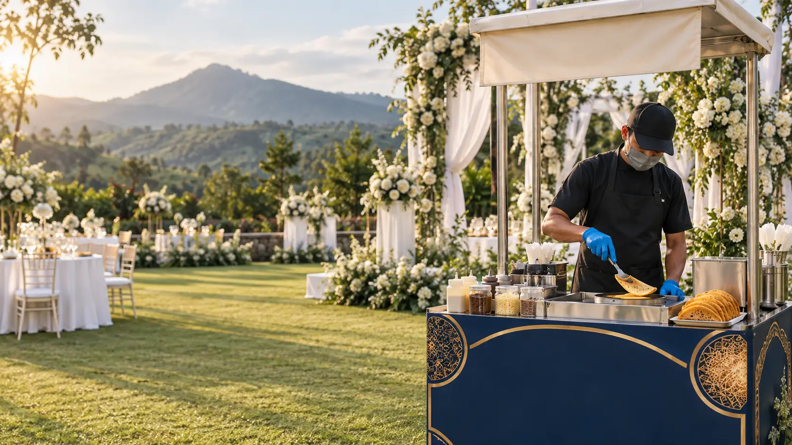
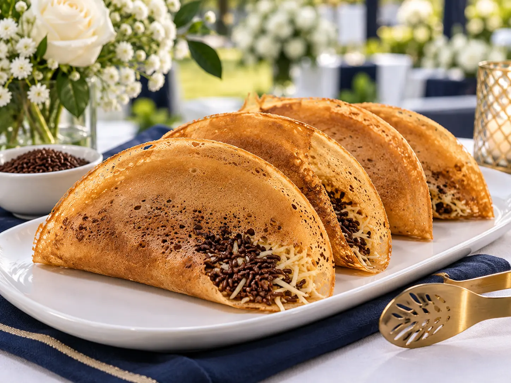
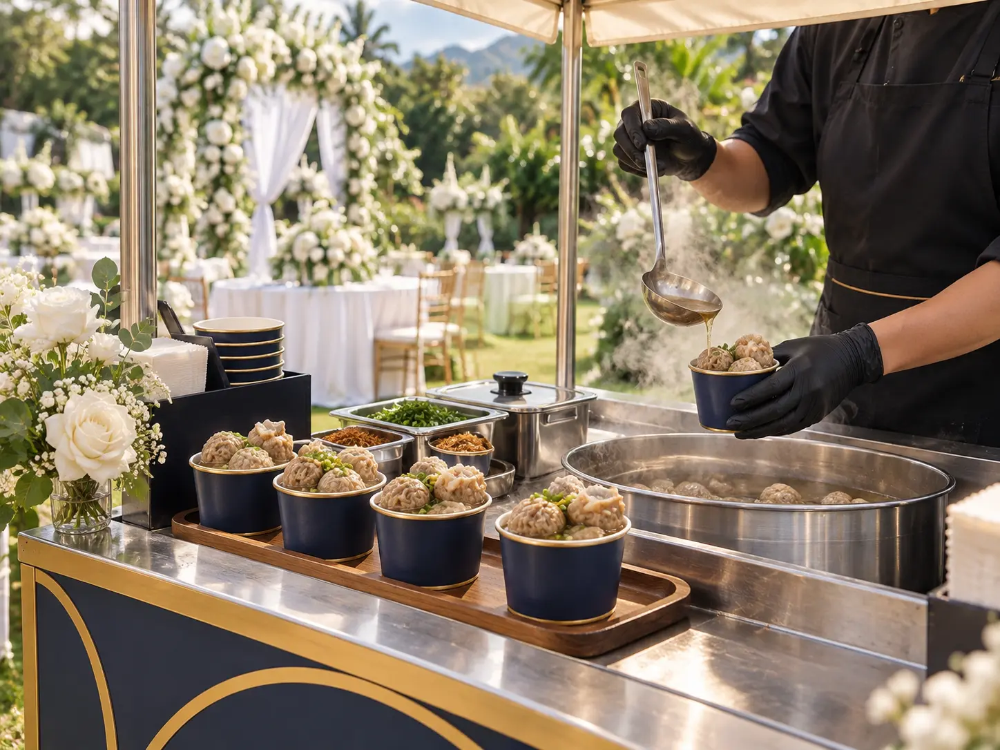

Wedding Klasik
350 leker
Keju, meses, susu cokelat, stroberi, blueberry, susu vanila, dan gula aren.
Rp1 juta
Leker tipis yang dimasak langsung dan Pentol Kriwil Tulang Rangu yang disajikan hangat. Dibawa dalam booth wedding-ready untuk resepsi, akad, dan lamaran.

Live cooking • Wedding-readyEmpat paket utama dengan jumlah dan pilihan topping yang jelas. Booth, operator, alat masak, dan pelayanan acara sudah disiapkan; transport dihitung berdasarkan lokasi.
Keju, meses, susu cokelat, stroberi, blueberry, susu vanila, dan gula aren.
Tiramisu, meses, keju, green tea, cappuccino, marshmallow, Oreo, dan choco chip.
Meses, keju, choco crunchy, dan Chocimaltine.
Meses, keju, Nutella, Ovomaltine, dan mozzarella.
Harga belum termasuk transportasi dan biaya khusus venue. Konfirmasi tanggal, lokasi, jam pelayanan, serta kebutuhan listrik/gas sebelum membayar deposit.
Pentol Kriwil Tulang Rangu memberi pasangan rasa gurih yang kontras dengan leker. Bisa dipesan sendiri atau menjadi duo stall.
Disajikan hangat dalam cup yang mudah dibawa sambil berdiri. Saus pedas dipisah agar aman untuk anak dan tamu senior.
Dua booth mini yang tampil serasi untuk memberi tamu pilihan tanpa mengaburkan hero product.
Harga Pentol Kriwil dan paket Duo merupakan harga peluncuran. Transportasi dan kebutuhan venue dihitung terpisah.
Visual ini menunjukkan arah penyajian. Dokumentasi acara asli akan terus ditambahkan setelah setiap wedding.


Gambar konsep dibuat untuk presentasi awal. Tampilan aktual mengikuti venue, cuaca, dekorasi, dan paket yang dipilih.
Satu alur yang mudah dipahami calon pengantin, wedding organizer, dan catering utama.
Supaya pasangan, WO, dan tim booth mempunyai ekspektasi yang sama sebelum hari acara.
Bisa. Paket dapat digunakan untuk resepsi, akad, lamaran, ulang tahun, arisan, pengajian, dan acara khusus lain selama tanggal tersedia.
Booth utama mempertahankan identitas navy–gold. Nama pasangan dan aksen ringan dapat disesuaikan tanpa menghilangkan identitas brand.
Kapasitas dipengaruhi jumlah topping dan arus tamu. Karena itu pilihan topping dibatasi per paket dan tim mempersiapkan produksi untuk jam puncak.
Belum. Biaya transportasi diberikan setelah lokasi serta akses venue diketahui.
Kirim tanggal, venue, jumlah tamu, dan paket. Setelah quotation disetujui, deposit 50% mengunci tanggal.
Artikel praktis untuk pasangan dan wedding organizer, disusun berdasarkan pertanyaan yang paling sering muncul saat merencanakan konsumsi.
Pilih stall yang bukan hanya mengenyangkan, tetapi juga memberi pengalaman.
Baca artikel →Budget • 6 menitCara membaca porsi, kru, transport, durasi, dan venue charge.
Baca artikel →Perencanaan • 8 menitRumus praktis agar stall cukup melewati jam puncak tanpa sisa berlebihan.
Baca artikel →Kirim tanggal, area venue, jumlah tamu, dan paket yang diminati. Admin akan melanjutkan dengan quotation serta kebutuhan teknis.